Goal of the lab
The purpose of this workshop is to use the CloudBees platform. CloudBees is both a development platform and a production platform.
Our goal is to make some changes to the yawyl application then deploy it on a CloudBees production cluster.

Workshop requirements
- Git client: GitHub has setup
tutorials for all platforms (just perform the "Download and Install Git" step, we'll set up the SSH key at the beginning of the lab).
- Apache Maven (version 3.0.3).
- SSH client (should already be installed on any Unix platform, will come with Git for Windows).
- cURL command line tool for transferring data with URL syntax.
@DEV
Configure SSH
- Backup your existing ~/.ssh folder
> mv ~/.ssh ~/.ssh.bak
> mkdir ~/.ssh |
- Generate your SSH key
> ssh-keygen -t rsa -C "techevent+{{page.groupId}}@xebia.fr"
|
- Change access control to your ~/.ssh folder
> chmod 700 ~/.ssh
> chmod -R 600 ~/.ssh/* |
- Connect to Cloudbees through this URL and by using these credentials:
https://grandcentral.cloudbees.com/
Login: {{page.groupId}}
Password: <<Written on your worksheet>>
- Upload your SSH public key on CloudBees
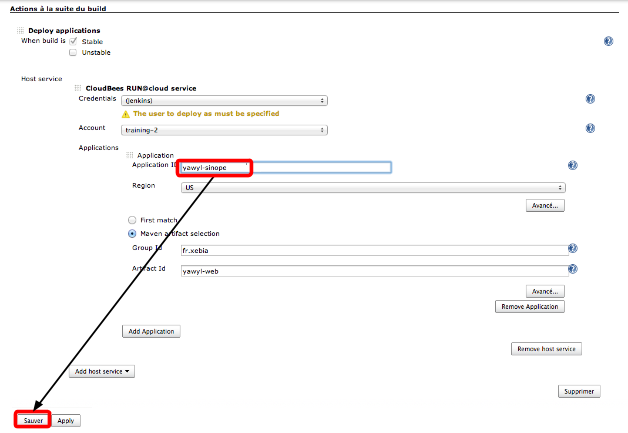
Create Repository on CloudBees
- Go to the CloudBees homepage and click on Repositories tab.
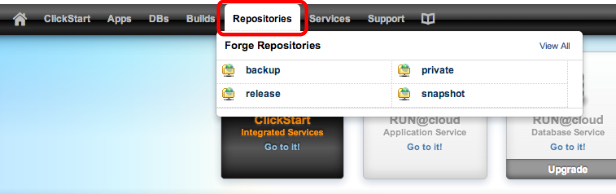
- Click on Create new code repository in Code Repositories section and indicate the name of your project repository: yawyl-{{page.groupId}}

Import your project on CloudBees repository
- Clone the project from GitHub
> git clone https://github.com/xebia-france/workshop-cloudbees.git yawyl
|
- Go to directory workshop-cloudbees
- Configure the remote origin according to your CloudBees repository
> git remote rename origin legacy
> git remote add origin ssh://git@git.cloudbees.com/training-{{page.accountId}}/
yawyl-{{page.groupId}}.git |
- Remove old link with GitHub repository
- Push your project to CloudBees
Create a Continuous Integration job on Jenkins
- Firstly, you have to create a new Jenkins job which will build when a change is pushed to your Git repository
- Go to the Build Service of CloudBees by clicking on Jenkins CI:
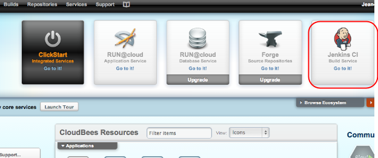
- Go to the tab view corresponding to your group name {{page.groupId}}, and create a new job from the left menu.

- Name this job yawyl-{{page.groupId}}-ci and tick Construire un projet maven2 /3, then click on OK button
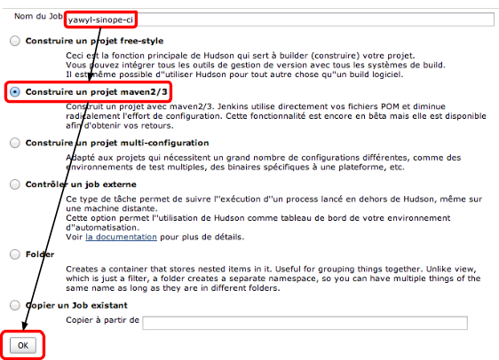
Configure your Continuous Integration job
- Now, you have to configure your job, by filling the URL of your source repository and by specifying the Maven goals to execute
- Specify the JDK version (Sun JDK 1.6)
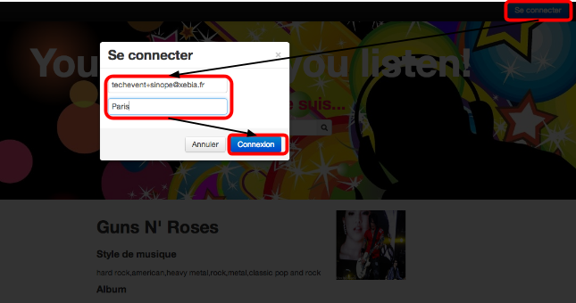
- In the section Gestion de code source, tick Git and specify the URL of the repository:
ssh://git@git.cloudbees.com/training-{{page.accountId}}/yawyl-{{page.groupId}}.git
- Then indicate the branch to build: master
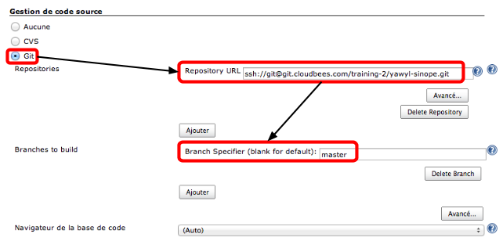
- In the section Ce qui déclenche le build, tick only Build when a change is pushed to CloudBees forge
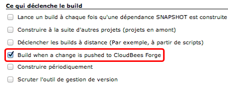
- In the section Build, specify clean package to Goals et Options field, and verify that POM Racine is pom.xml
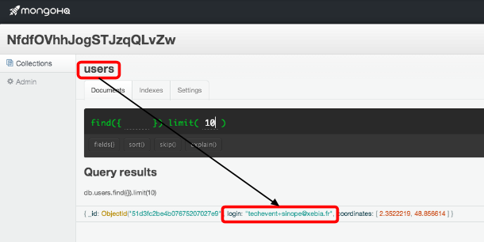
- Now, you can save the job configuration and run it
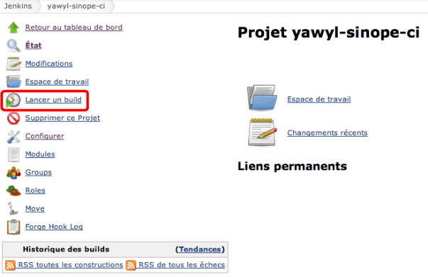
Fix the test and check the Continuous Integration
- You can observe that the project has test failure
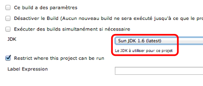
- Go to the file NotificationsRepositoryTest and fix the test. Next, commit the file and push them to github.
> git commit -am “fix test”
> git push |
- The Continuous Integration job should be run automatically and go back to stable.

@INTEG
The next step is to configure the build to automatically deploy your yawyl application in the integration server. To do this, we must create a Tomcat instance and a MongoDB instance. Then, we configure Tomcat to use the MongoDB. Finally, we configure your existing Jenkins job to deploy your application on your integration server.
Create your MongoDB instance
- Click on Services tab, then click on MongoHQ in the Subscribed Services list.

- Create a new MongoDB instance by clicking on Create new mongodb link and fill your Database Name: yawyl-{{page.groupId}}-integ, then click on Create button
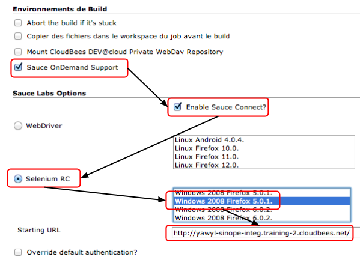
Create your application
- Click on Apps tab, then click on Add New Application in the left menu, and fill your Application name: yawyl-{{page.groupId}}-integ, finally click on Finish button
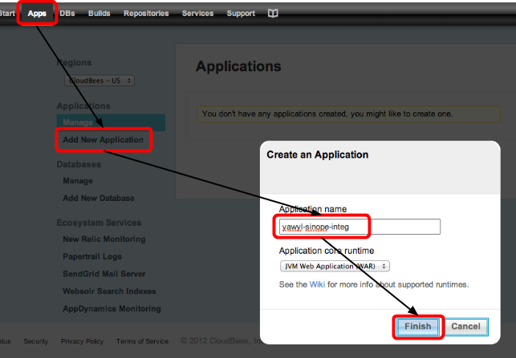
- Once your application is ready, click on the Configure button, and then on the Configuration tab
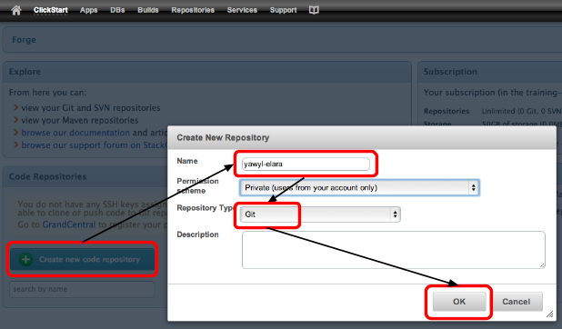
- (1) Select Basic Java Webapp
- (2) Choose Starter plan
- (3) Select Automatic Scaling under Redundancy and Scale. A new set of fields appeared to configurue automatic scaling. Select the fields like the following :
- Minimum instances -> 1 instance
- Maximum instances -> 4 instances
- Measurement window -> 1 minute
- Cool-down window -> 1 minute
- Scale Up when -> Request Count Average is Greater Than 50
- Scale Down when -> Request Count Average is Less Than 10
- (4) (5)Tick Enable New Relic RPM application monitoring and Enable Papertrail application logging
- (6) Click on the Save Changes button at the top of the page
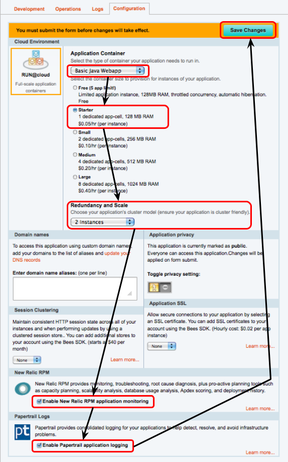
Install CloudBees SDK
On MacOS X or Unix
- Open a command-line console (launch the Terminal application on OSX) and then download SDK zip file and unzip it into a directory
> cd && curl -L cloudbees-downloads.s3.amazonaws.com/sdk/cloudbees-sdk-1.5.0-bin.zip
> unzip cloudbees-sdk-1.5.0-bin.zip
> rm cloudbees-sdk-1.5.0-bin.zip
> cd cloudbees-sdk-1.5.0 |
- Add the BEES_HOME variable to your OS-X/linux command line environment by adding the following lines to your ~/.bash_profile (you may need to create this file)
export BEES_HOME=~/cloudbees-sdk-1.5.0
export PATH=$PATH:$BEES_HOME
|
- Refresh your terminal's bash session by executing
On Windows
- Download the following file : cloudbees-sdk and unzip it
- Open a predefined Bees Console window by double clicking on the BEES_HOME\Bees Console icon. Please avoid a path with spaces in your installation directory ! (eg don't use Program Files if you can avoid it)
Initialize CloudBees SDK
- Refresh your terminal's bash session by executing
> bees init
WARNING: This command will delete your current configuration directory, including
all installed plugins. Answering "no" will only re-initialize your bees.config
file and leave your installed plugins intact.
Are you sure you want to delete your '/Users/{{page.groupId}}/.bees'
configuration directory? (y/n) y
You have not created a CloudBees configuration profile, let's create one now...
Enter your default CloudBees API end point [us | eu]: us
Enter your CloudBees account email address: techevent+{{page.groupId}}@xebia.fr
Enter your CloudBees account password: |
Bind your MongoDB instance with your application
- Once SDK installed and initialized, you have to bind your MongoDB instance with your application
> bees app:bind -a training-{{page.accountId}}/yawyl-{{page.groupId}}-integ -r
mongohq:yawyl-{{page.groupId}}-integ -as YAWYL
|
- That will automatically create a system property called MONGOHQ_URL_YAWYL that is used in your application
protected DB getDb() throws UnknownHostException {
MongoURI mongoURI = new MongoURI(System.getProperty("MONGOHQ_URL_YAWYL"));
DB db = mongoURI.connectDB();
db.authenticate(mongoURI.getUsername(), mongoURI.getPassword());
return db;
} |
Configure Jenkins job to deploy automatically
- On the configuration section, we add a post build action to deploy automatically the application
- On the Actions à la suite du build section, click on Add post build action, then click on Deploy applications
- On Applications section, fill your Application ID: yawyl-{{page.groupId}}-integ, and verify that selected Region is US
- Click on Save button
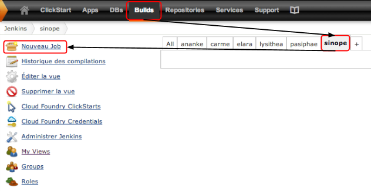
- Now, launch a build manually, and verify that yawyl application is up and ready on your integration server by using your application URL:
http://yawyl-{{page.groupId}}-integ.training-{{page.accountId}}.cloudbees.net/
- Click on Se connecter in order to create an account on your yawyl application, and fill your email address and city, then click on Connexion
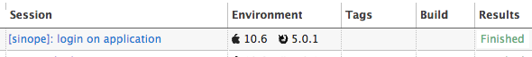
- Your are now connected, enjoy!
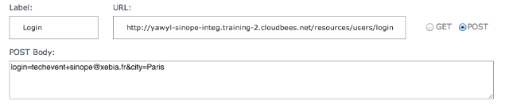
Check account creation in MongoDB
- Go to the Services tab and click on manage on MongoHQ section, then on your MongoDB resource, click on View button
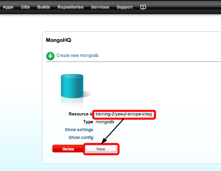
- 2 new collections have been created: notifications and users, and if you go into users collection, you can see your user account information
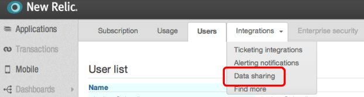
@TEST
Run Selenium tests from the cloud
- Name this job yawyl-{{page.groupId}}-test and tick Construire un projet free-style, then click on OK button
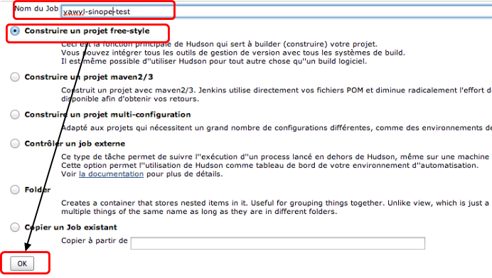
Configure your Continuous Integration job
- Now, you have to configure your job, by filling the URL of your source repository and by specifying the Maven goals to execute
- Specify the JDK version (Sun JDK 1.6)
- In the section Gestion de code source, tick Git and specify the URL of the repository:
ssh://git@git.cloudbees.com/training-{{page.accountId}}/yawyl-{{page.groupId}}.git
- Then indicate the branch to build: master
- In the section Ce qui déclenche le build, tick only Construire à la suite d’autres projets (projets en amont), and type yawyl-{{page.goupId}}-ci on Noms des projets
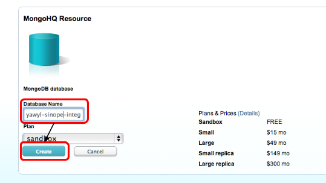
- In the section Environnements de Build, tick only Sauce OnDemand Support
- Then tick on Enable Sauce Connect?
- Click on Selenium RC and choice Mac 10.6 Google Chrome 27.0.1453.110. (This is a navigator and the OS to launch UI test)
- On starting URL, indicate the url of the application http://yawyl-{{page.groupId}}-integ.training-{{page.accountId}}.cloudbees.net/
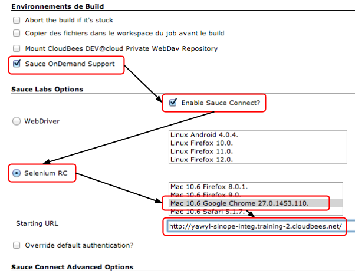
- On the section Build, click on Ajouter une étape au build, and choice Invoquer les cibles maven de haut niveau
- and indicate the Maven goal clean verify -P selenium
- Click on sauver
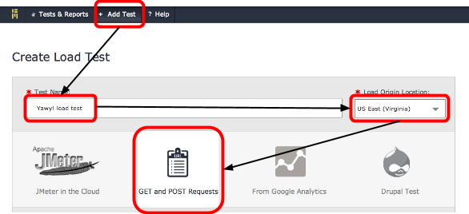
- You can click on sauceLab icon to show your test result.
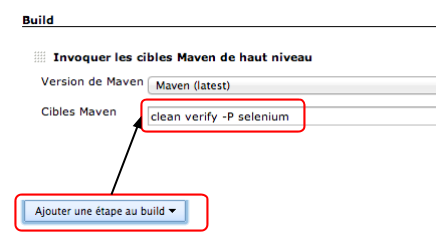

@RUN
Create and Configure your Production Application
- On the left-hand side menu Applications, click on Add New application
- Create a new application on RUN@cloud named yawyl-{{page.groupId}}

- Once your application is ready, click on the Configure button, and then on the Configuration tab
- Select Basic Java Webapp, then choose Starter plan and select 2 Instances under Redundancy and Scale
- Tick Enable New Relic RPM application monitoring and Enable Papertrail application logging
- Click on the Save Changes button at the top of the page
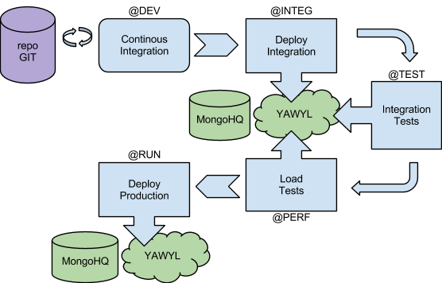
Configure a new MongoDB database
- Click on Services tab, then click on MongoHQ in the Subscribed Services list.
- Create a new MongoDB instance by clicking on Create new mongodb link and fill your Database Name: yawyl-{{page.groupId}}-prod, then click on Create button
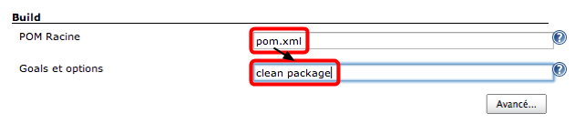
- Bind your MongoDB instance with your application
> bees app:bind -a training-{{page.accountId}}/yawyl-{{page.groupId}} -r
mongohq:yawyl-{{page.groupId}}-prod -as YAWYL
|
Create a Jenkins job for deploying application on Production environment
- Open Jenkins window by clicking on Builds on the top left menu
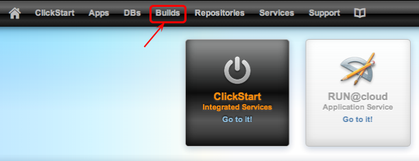
- Create a new Jenkins Job with the job name yawyl-{{page.groupId}}-prod and tick Copier un Job existant, then specify yawyl-{{page.groupId}}-ci and click on OK button
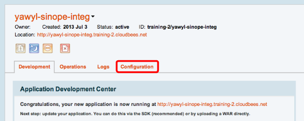
- On the configuration section, update the post build action to deploy automatically the application in your production environment
- On Applications section, fill your Application ID: yawyl-{{page.groupId}}, and verify that selected Region is US
- Click on Save button
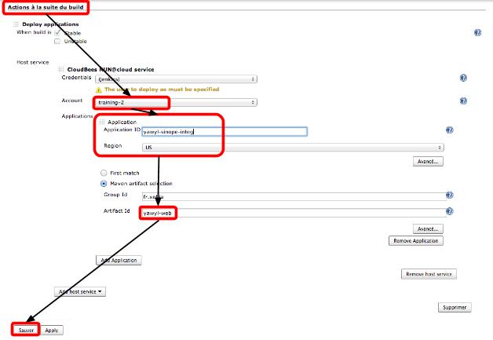
- Now, launch a build manually, and verify that yawyl application is up and ready on your production server by using your application URL:
http://yawyl-{{page.groupId}}.training-{{page.accountId}}.cloudbees.net/
- Now, your application is live in production, yeah!
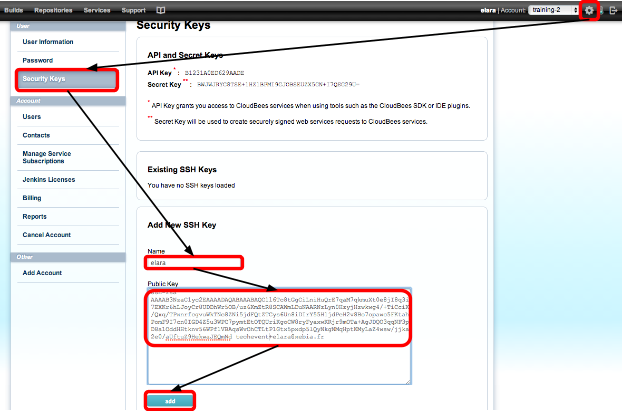
@PERF
Get your New Relic API key
- First, you must find your new relic API key. For this, go in the Services tab and select New Relic
- Go in the Services tab and select BlazeMeter service
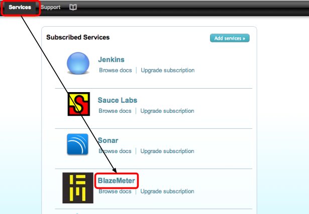
- Go to Account settings menu

- Then go to the Integrations menu and select Data sharing item

- Copy your API key and keep it safety
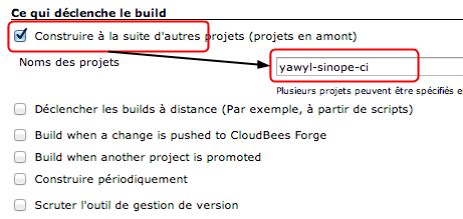
Create on stress test
- Go to the Services tab and select BlazeMeter service
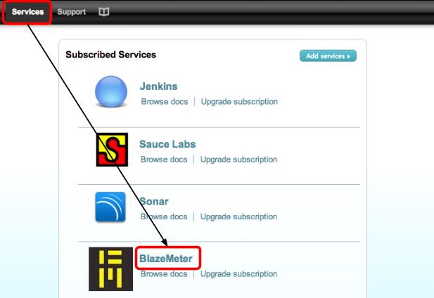
- Click on Add test link in the header menu, name your test, verify the location and select GET and POST Requests

- Simulate user activity by adding requests
- First, go to the homepage
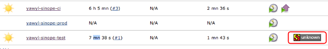
- Second, login to yawyl

- Then, add three artists : Nirvana, Eazy-E and M
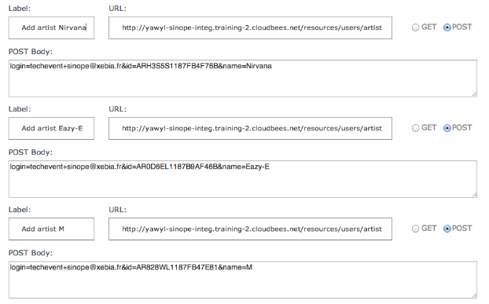
- Finally, search artists near Paris (longitude: 2.3522219, latitude: 48.856614)
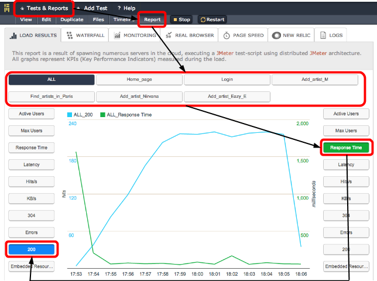
- Set up the number of users and the ramp
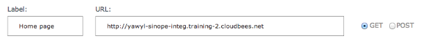
- Set up your New Relic API key
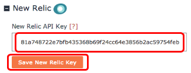
- Select your application and the metric (Instance - average_value) you want to monitor
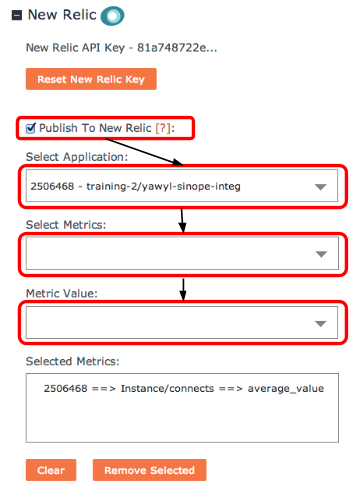
- Finally Save your changes (do not Save & Start)
Bind the stress test to your Jenkins job
- Go to the Builds view using the header menu and open your job yawyl-{{page.groupId}}-ci
- On the configuration section, add a post build action to start BlazeMeter test
- On the Actions à la suite du build section, click on Add post build action, then click on BlazeMeter (be aware, BlazeMeter configuration must be after deployment configuration)
- Select your BlazeMeter Test and set up thresholds
- Click on Save button
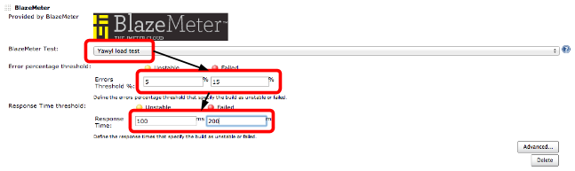
- Launch your job
Monitoring with New Relic
- Click on the services link in the top bar.
- Click on the New Relic icon. You can read a brief presentation in the wiki.
- Select your application
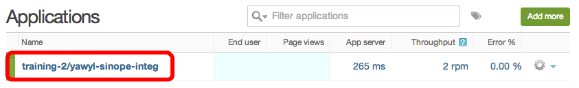
- Verify elasticity by checking how many servers are running. Before, we had two instances but when tests start, two new instances had spawn
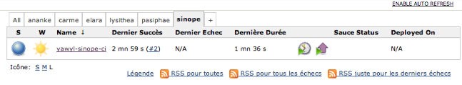
- You can also check BlazeMeter report in BlazeMeter service
- Go to the BlazeMeter service, click on the b tab, select your test scenario Yawyl load test, click on the Report link in the inner tab and finally select the LOAD RESULTS tab (if not selected)
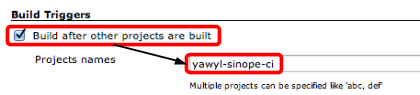